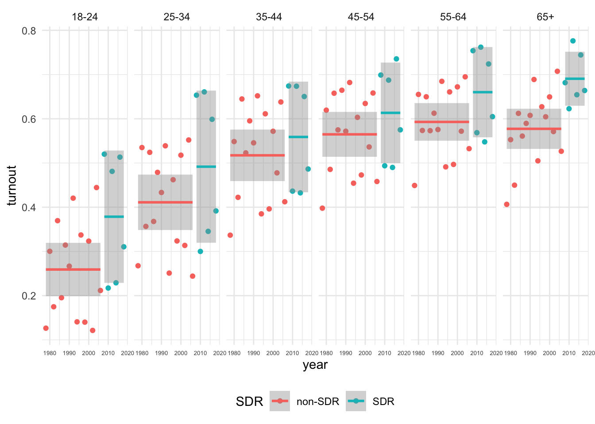
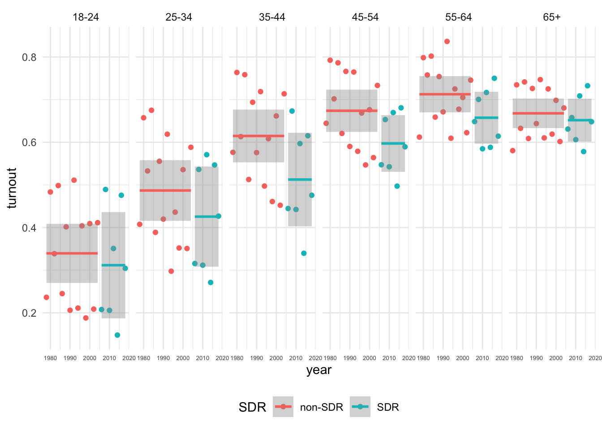
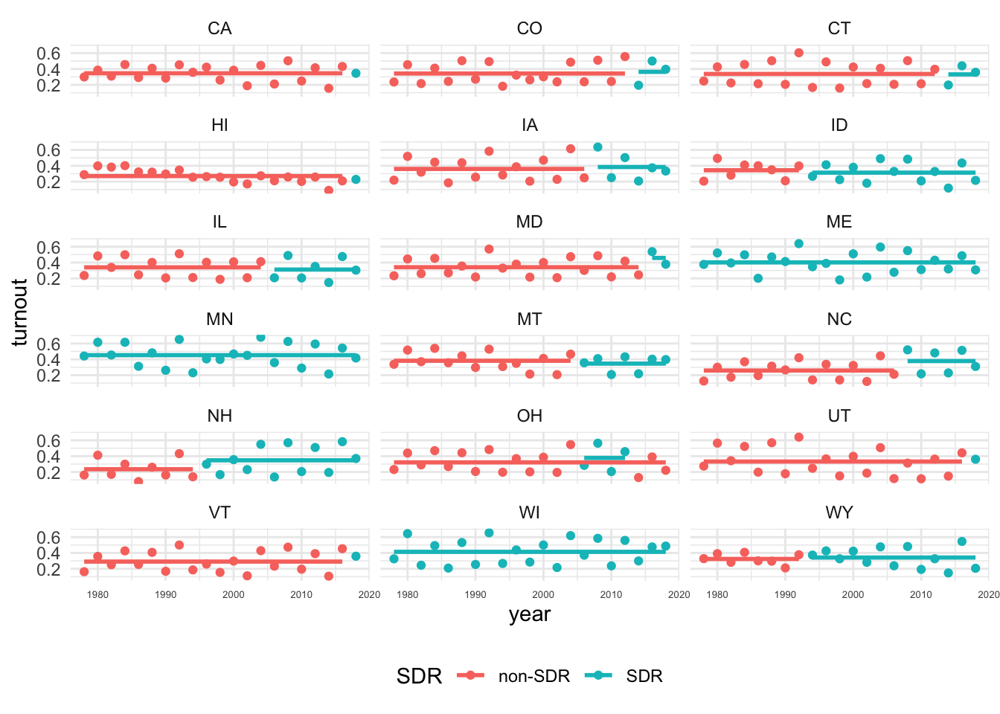
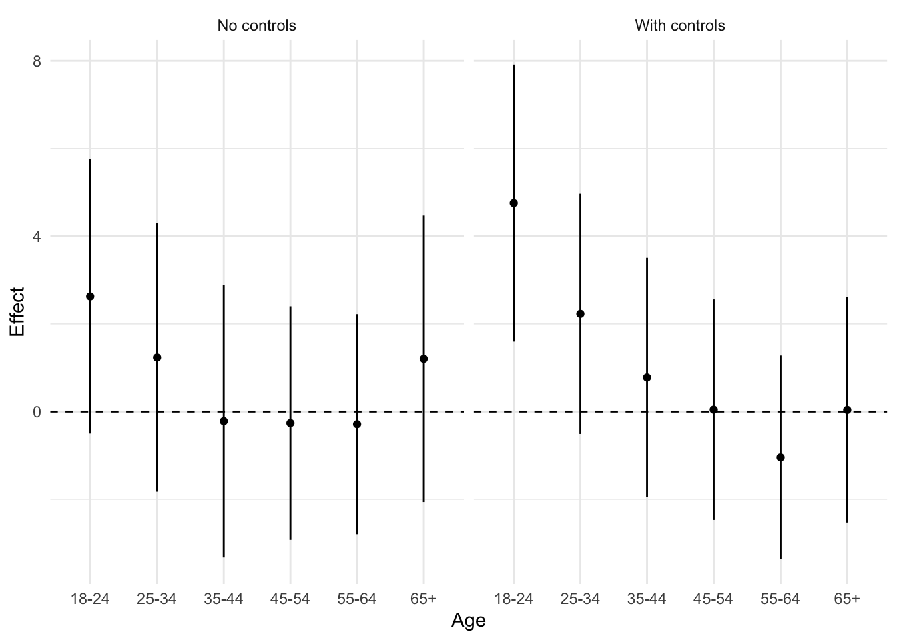

set.seed(3202025)
graded_question <- sample(1:6,size = 1)
paste("Question",graded_question,"is the graded question for this week")[1] "Question 6 is the graded question for this week"Reproducing the results
In this lab, we continue our replication of Grumbach and Hill (2021) “Rock the Registration: Same Day Registration Increases Turnout of Young Voters.”
To accomplish this we will:
Load packages. (5 minutes)
Set working directory and load the data from last class. (5 minutes)
Do some additional recoding (5 minutes)
Describe variation in voting by state, year, policy, and age (20 minutes)
Estimate four regression models to understand fixed effects and cluster robust standard errors (20 minutes)
Replicate two regression models from Grumbach and Hill (2021) interacting sdr with age_group (10 minutes)
Recreate a portion of Figure 3 showing the marginal effect of sdr by age group. (15 minutes)
Finally, we’ll take the survey for this week
One of these 6 tasks will be randomly selected as the graded question for the lab.
set.seed(3202025)
graded_question <- sample(1:6,size = 1)
paste("Question",graded_question,"is the graded question for this week")[1] "Question 6 is the graded question for this week"You will work in your assigned groups. Only one member of each group needs to submit the html file of lab.
This lab must contain the names of the group members in attendance.
If you are attending remotely, you will submit your labs individually.
Here are your assigned groups for the semester.
This week’s lab will give you practice:
Loading data from your own computers (Q1)
Data wrangling with conditional logic (Q2)
Describing variation to help illustrate the motivation behind fixed effects regression (Q3)
Using lm_robust() to easily estimate models with fixed effects and robust clustered standard errors (Q4)
Estimating and interpreting interaction models (Q5-6) to test conditional claims (like does the effect of Same Day Registration vary across age cohorts)
As with every lab, you should:
author: section of the YAML header to include the names of your group members in attendance.As always, let’s load the packages we’ll need for today
the_packages <- c(
## R Markdown
"kableExtra","DT","texreg","htmltools",
## Tidyverse
"tidyverse", "lubridate", "forcats", "haven", "labelled",
## Extensions for ggplot
"ggmap","ggrepel", "ggridges", "ggthemes", "ggpubr",
"GGally", "scales", "dagitty", "ggdag", "ggforce",
# Data
"COVID19","maps","mapdata","qss","tidycensus", "dataverse",
"janitor",
# Analysis
"DeclareDesign", "easystats", "zoo","margins",
"modelsummary", "ggeffects"
)
# Define function to load packages
ipak <- function(pkg){
new.pkg <- pkg[!(pkg %in% installed.packages()[, "Package"])]
if (length(new.pkg))
install.packages(new.pkg, dependencies = TRUE)
sapply(pkg, require, character.only = TRUE)
}
ipak(the_packages) kableExtra DT texreg htmltools tidyverse
TRUE TRUE TRUE TRUE TRUE
lubridate forcats haven labelled ggmap
TRUE TRUE TRUE TRUE TRUE
ggrepel ggridges ggthemes ggpubr GGally
TRUE TRUE TRUE TRUE TRUE
scales dagitty ggdag ggforce COVID19
TRUE TRUE TRUE TRUE TRUE
maps mapdata qss tidycensus dataverse
TRUE TRUE TRUE TRUE TRUE
janitor DeclareDesign easystats zoo margins
TRUE TRUE TRUE TRUE TRUE
modelsummary ggeffects
TRUE TRUE # Set working directory to source file location
# Load data (assumes a file called `cps_clean.rda` is in the same folder as this lab)
# # BACKUP: Uncomment if you're having trouble you can load a version of the data from the web:
load(url("https://pols1600.paultesta.org/files/data/cps_clean.rda"))The following code relevels the factor variable age_group so that “65+” is the first level of the factor.
When lm() converts age_group to indicators for each in level of the factor, it’s excludes the first level, which becomes the reference category described by the intercept, \(\beta_0\) in the model.
Please create the following additional variables, that will be useful for presenting and visualizing data:
election_type a categorical variable takes a value of “Presidential” when year is a presidential election, and a value of “Midterm” otherwiseSDR a categorical variable that takes a value of “SDR” when sdr == 1 and 0 otherwise (you may already have this in your data)presidential_elections <- seq(1980, 2016, by = 4)
cps %>%
mutate(
age_group = fct_relevel(age_group, "65+"),
SDR = ifelse(sdr == 1, "SDR","non-SDR"),
election_type = ifelse(year %in% presidential_elections, "General","Midterm"),
) -> cpsCreate a figure that shows how average turnout varies across state in the cps data
# Create dataframe of average voting rates by state
cps %>%
group_by(st) %>%
summarise(
turnout = mean(dv_voted, na.rm=T)
) %>%
mutate(
st = fct_reorder(st, turnout)
) -> df_state
# Use data frame of state averages to produce figure
df_state %>%
ggplot(aes(turnout,st,fill=turnout))+
geom_bar(stat = "identity") +
theme_minimal()
Create a figure that shows how turnout varies across time.
Calculate the yearly averages separately by election_type. Facet your plot by election_type using facet_wrap(~election_type)
# Calculate yearly averages in turnout by election type
cps %>%
group_by(year, election_type ) %>%
summarise(
turnout = mean(dv_voted, na.rm=T)
) -> df_year
# Display variation in turnout by year for Presidential And Midterm Elections
df_year %>%
ggplot(aes(year, turnout, col=election_type)) +
geom_line() +
facet_grid(~election_type)+
theme_minimal()+
theme(legend.position = "bottom",
axis.text.x = element_text(size =5))
For a single state (you pick) that implemented SDR registration at some point between 1978 and 2018, plot the average turnout by age_group before and after the SDR
This is a tricky one that is designed to test your data-wrangling skills.
sdrfilter(), group_by() and summarise()ggplot() setting the appropriate aesthetics using geom_point() and facet_grid()# For a chosen state, create a dataframe showing how turnout varies by year, age_group, and SDR
# states that implement SDR
sdr_states <- unique(cps$st[cps$sdr == 1])
cps %>%
filter(st %in% sdr_states) %>%
group_by(st, year, SDR, age_group) %>%
summarise(
turnout = mean(dv_voted,na.rm=T)
) -> sdr_age_df
# Figure: Turnout by age group before and after SDR
sdr_age_df %>%
filter(!is.na(age_group)) %>%
filter(st == "NH") %>%
mutate(
# Relevel age_group so 18-24 comes first for this fig
age_group = factor(as.character(age_group))
) %>%
ggplot(aes(year, turnout, col = SDR))+
geom_point()+
# calculate conditional means by SDR using lm
stat_smooth(method = "lm", formula = "y~1")+
facet_grid(~ age_group)+
theme_minimal()+
theme(legend.position = "bottom",
axis.text.x = element_text(size =5))
In a few sentences, explain to your reader what these figures tell us about the data:
First there is considerable variation in average rates of turnout across states. For example, across the years considered, the average turnout rate in West Virginia (a state which never implemented Same Day Registration) was about 46.8 percent among CPS respondents, while the average turnout rate in Minnesota (a state which had SDR for the entire period) was more than 20 percentage points higher (68.2 percent).
Second, there is also considerable variation in turnout across election years. Turnout in presidential elections is much higher than turnout in midterm elections. From one presidential or midterm election to the next, turnout rates can swing by as much as 10 percentage points. There does not seem to be a clear trend in turnout over time in these data.
As for variation in turnout by age before and after SDR, your interpretations depend on which state you chose. In states like New Hampshire or North Carolina, turnout seems markedly higher among young folks after the states adopted SDR.1 In states like Illinois or Wyoming, there doesn’t appear to be much of a difference.
# Additional code to help me describe these figures
df_state %>%
filter(turnout == min(turnout) | turnout == max(turnout))# A tibble: 2 × 2
st turnout
<fct> <dbl>
1 MN 0.682
2 WV 0.468df_year %>%
group_by(election_type) %>%
mutate(
swing = abs(turnout - lag(turnout))
) %>%
summarize(
sd = sd(turnout),
max_swing = max(swing, na.rm=T)
)# A tibble: 2 × 3
election_type sd max_swing
<chr> <dbl> <dbl>
1 General 0.0293 0.0945
2 Midterm 0.0287 0.102 Here’s the turnout by age plot for North Carolina
sdr_age_df %>%
filter(!is.na(age_group)) %>%
filter(st == "NC") %>%
mutate(
age_group = factor(as.character(age_group))
) %>%
ggplot(aes(year, turnout, col = SDR))+
geom_point()+
stat_smooth(method = "lm", formula = "y~1")+
facet_grid(~ age_group)+
theme_minimal()+
theme(legend.position = "bottom",
axis.text.x = element_text(size =5))
Here’s the same plot for Illinois
sdr_age_df %>%
filter(!is.na(age_group)) %>%
filter(st == "IL") %>%
mutate(
age_group = factor(as.character(age_group))
) %>%
ggplot(aes(year, turnout, col = SDR))+
geom_point()+
stat_smooth(method = "lm", formula = "y~1")+
facet_grid(~ age_group)+
theme_minimal()+
theme(legend.position = "bottom",
axis.text.x = element_text(size =5))
And here is a plot of the average turnout rates among 18-24 year olds over time in the 18 states that adopted SDR at some point between 1978-2018
sdr_age_df %>%
filter(age_group == "18-24") %>%
ggplot(aes(year, turnout, col = SDR))+
geom_point()+
stat_smooth(method = "lm", formula = "y~1", se = F)+
facet_wrap(~st , ncol = 3)+
theme_minimal()+
theme(legend.position = "bottom",
axis.text.x = element_text(size =5))
Interesting, so there appears to be considerable variation in turnout across states and over time. Further, depending on which state you looked at you may have found evidence of differences in turnout by age group before and after SDR that either support or challenge Grumbach’s main claims.
In this question, we’ll see how we can use fixed effects to try and account for variation across states and years to isolate the effect of same day registration on turnout.
We will also see how using robust standard errors with and without clustering changes our interpretations of the significance of our results.
In this question you will estimate four increasingly complex models using lm_robust() and explain how each subsequent model differs from the preceding model.
A simple linear model, m1 akin to what lm() produces modelling turnout (dv_voted) as a function of same day registration (sdr)
A simple linear model, m2 with standard errors that are robust to heteroskedasticity (i.e. non-constant error variance) by setting the lm_robust() argument: se_type = "stata"
A two-way fixed effects model, m3, with fixed effects for state and year using lm_robust() argument: fixed_effects = ~ st + year and robust standard errors using the same argument as m2
A two-way fixed effects model, m3, with fixed effects for state and year using lm_robust() argument: fixed_effects = ~ st + year AND robust standard errors clustered by state using the argument: clusters = st
I’ve gotten you started with m1 Use that code as a template to estimate m2, m3, and m4
# ---- m1: Simple OLS regression ----
m1 <- lm_robust(dv_voted ~ sdr,
data = cps,
se_type = "classical",
try_cholesky = T)
# ---- m2: Simple OLS with robust standard errors ----
m2 <- lm_robust(dv_voted ~ sdr,
data = cps,
se_type = "stata",
try_cholesky = T)
# ---- m3: Two-way Fixed Effects for State and Year ----
m3 <- lm_robust(dv_voted ~ sdr,
data = cps,
fixed_effects = ~ st + year,
se_type = "stata",
try_cholesky = T)
# ---- m4: TWFE for State and Year and cluster robust SEs ----
m4 <- lm_robust(dv_voted ~ sdr,
data = cps,
fixed_effects = ~ st + year,
se_type = "stata",
clusters = st,
try_cholesky = T)When you’ve completed the previous section, you should be able uncomment and run the following code
htmlreg(l = list(m1,m2,m3, m4),
digits = 5,
include.ci = F,
) %>% HTML() %>% browsable()| Model 1 | Model 2 | Model 3 | Model 4 | |
|---|---|---|---|---|
| (Intercept) | 0.54787*** | 0.54787*** | ||
| (0.00037) | (0.00038) | |||
| sdr | 0.06159*** | 0.06159*** | 0.00671*** | 0.00671 |
| (0.00110) | (0.00108) | (0.00185) | (0.01405) | |
| R2 | 0.00157 | 0.00157 | 0.02845 | 0.02845 |
| Adj. R2 | 0.00157 | 0.00157 | 0.02841 | 0.02841 |
| Num. obs. | 1988501 | 1988501 | 1988501 | 1988501 |
| RMSE | 0.49658 | 0.49658 | 0.48986 | 0.48986 |
| N Clusters | 49 | |||
| ***p < 0.001; **p < 0.01; *p < 0.05 | ||||
Please write a few sentences explaining how the coefficient on sdr and it’s standard error changes across the four models. I’ll get you started:
The table presents the results of four regression models. The outcome in each model is a binary indicator of whether respondents to the CPS voted in a given election. The key predictor of interest in each model is the coefficient for sdr which corresponds the model’s predicted difference in turnout in states that had same day registration compared to states that did not. Model 1 presents the results from a simple linear regression assuming homoskedastic errors (i.e. constant error variance). The coefficient on sdr of 0.062 implies that this model predicts turnout will be higher by 6.2 percentage points in states with Same Day Registration. The standard error of 0.00110 is small relative to the coefficient, which as we will see in two weeks implies a statistically significant relationship.
Model 2 presents the same specification, but uses robust standard errors that allow for non-constant (heteroskedastic) error variance. The coefficient on sdr is exactly the same as Model 1, and the standard error is similar to the ten-thousandth decimal place. In short, simply including robust standard errors does little to change our substantive interpretation.
Model 3 includes fixed effects of state and year. Specifically, lm_robust() uses the within-in transformation via the method of alternating projections, subtracting off the state and year level means of the predictors and outcomes before estimating the regression. This transformation is equivalent to including indicator variables to represent the various levels of each fixed effect (e.g. including year and st as factor variables in the model). That latter, sometimes called the dummy variable approach, is more computationally intensive (if there are lots of levels to the fixed effect, the matrices involved in the calculation get very large), but as the code below demonstrates, they all yield the same estimates and standard errors (although there are some additional degrees of freedom adjustments that lm_robust() performs, which we are not when we calculate the within transformations by hand)
# Kludge-y method of alternating projections....
cps %>%
ungroup() %>%
# Only use observations from m3
filter(!is.na(dv_voted), !is.na(sdr)) %>%
dplyr::group_by(st) %>%
# Within transformation by states
mutate(
dv_voted_within = dv_voted - mean(dv_voted, na.rm=T),
sdr_within = sdr - mean(sdr, na.rm=T)
) %>%
ungroup() %>%
# Within transformation by year
dplyr::group_by(year) %>%
mutate(
dv_voted_within = dv_voted_within - mean(dv_voted_within, na.rm=T),
sdr_within = sdr_within - mean(sdr_within,na.rm=T)
) %>% ungroup() %>%
# Within transformation by year
dplyr::group_by(st) %>%
mutate(
dv_voted_within = dv_voted_within - mean(dv_voted_within, na.rm=T),
sdr_within = sdr_within - mean(sdr_within,na.rm=T)
) %>%
dplyr::group_by(year) %>%
mutate(
dv_voted_within = dv_voted_within - mean(dv_voted_within, na.rm=T),
sdr_within = sdr_within - mean(sdr_within,na.rm=T)
) %>% ungroup() %>%
dplyr::group_by(st) %>%
mutate(
dv_voted_within = dv_voted_within - mean(dv_voted_within, na.rm=T),
sdr_within = sdr_within - mean(sdr_within,na.rm=T)
) %>%
dplyr::group_by(year) %>%
mutate(
dv_voted_within = dv_voted_within - mean(dv_voted_within, na.rm=T),
sdr_within = sdr_within - mean(sdr_within,na.rm=T)
) %>% ungroup()-> cps
start_time_m3_within <- Sys.time()
m3_within <- lm_robust(dv_voted_within ~ sdr_within,
cps,
se_type = "stata",
try_cholesky = T)
end_time_m3_within <- Sys.time()
time_m3_within <- round(end_time_m3_within - start_time_m3_within,5)
start_time_m3_indicator <- Sys.time()
m3_indicator <- lm_robust(dv_voted ~ sdr + factor(year) + factor(st),
cps,
se_type = "stata",
try_cholesky = T)
end_time_m3_indicator <- Sys.time()
time_m3_indicator <- round(end_time_m3_indicator - start_time_m3_indicator,5)
time_m3_withinTime difference of 1.42573 secstime_m3_indicatorTime difference of 4.27558 secshtmlreg(list(m3, m3_within, m3_indicator),
omit.coef = "factor|Intercept",
digits = 5,
include.ci = F,
custom.model.names = c("lm_robust (within transformation)","Within transformation by hand","Indicator FE")
) %>% HTML() %>% browsable()| lm_robust (within transformation) | Within transformation by hand | Indicator FE | |
|---|---|---|---|
| sdr | 0.00671*** | 0.00671*** | |
| (0.00185) | (0.00185) | ||
| sdr_within | 0.00671*** | ||
| (0.00185) | |||
| R2 | 0.02845 | 0.00001 | 0.02845 |
| Adj. R2 | 0.02841 | 0.00001 | 0.02841 |
| Num. obs. | 1988501 | 1988501 | 1988501 |
| RMSE | 0.48986 | 0.48985 | 0.48986 |
| ***p < 0.001; **p < 0.01; *p < 0.05 | |||
Finally, model 4 presents the results of a TWFE regression with fixed effects for state and year with robust standard errors clustered by state. The coefficient on sdr remains the same as in Model 3, predicting about 0.6 percentage points higher turnout in states with same day registration. We see, however, that once we relax the assumption that our errors are independent, and allow for correlations between observations from the same state, our uncertainty about this estimate (quantified by its standard error) increases 10-fold, and we are non longer confident that there is a statistically significant relationship between same day registration and voting in these data.
In sum, once we account for fixed differences across states and between time periods, and allow correlated errors between observations from the same state, variation in the presence of same day registration laws seems to explain relatively little variation in voting
So which model should we prefer? I would say the default approach of most social scientists is to prefer the most conservative estimate, which in this case corresponds to the results from model 4. We’d rather under claim than over claim. Since rarely if ever, do we know the right model , it’s generally common practice to report the results of multiple models with different specifications (as Grumbach and Hill do) as a way of demonstrating the robustness of ones’ results.
Interesting. Once we account for fixed differences across states and between time periods and allow correlated errors between observations from the same state, variation in the presence of same day registration laws seems to explain relatively little variation in voting.
Grumbach and Hill, however, are interested in a different question, namely, whether the effects of same day registration vary by age.
Grumbach and Hill test these claims using a regression model that interacts the sdr variable with indicators for the age_group of respondents.
The combination of the coefficient on sdr and the coefficient on the interaction of sdr with a specific age group indicator, tells us the predicted effect of sdr for respondents of that age group. In other words, it lets us assess whether same day registration is associated with more turnout among younger voters compared to older voters.
Formally, we we can describe these models using the following notation:
\[ y_{ist} = \beta_0 + \overbrace{\alpha_s}^{\text{FE State}} + \underbrace{\gamma_t}_{\text{FE Year}} + \overbrace{\beta_1sdr_{st}}^{\text{ME of SDR for 65+}} + \underbrace{\sum_{k = 18-14}^{k = 55-64}\beta_{k} sdr_{st}\times age_{ist}}_{\Delta \text{ in ME of SDR for Age }} +\overbrace{X\beta}^{\text{Controls}}+\epsilon_{ist} \] And the quantities of interest for Grumbach and Hill’s claim are:
\[ \text{Marginal Effect of SDR for 65+} = \beta_1 \] The marginal effects of the other age groups are defined by \(\beta_1\), the marginal effect of SDR for 65+, PLUS the coefficient on the interaction term between SDR and each age group indicator. So for 18-24 year olds the quantity of interest is the sum of:
\[ \text{Marginal Effect of SDR for 18-24} = \beta_1 + \beta_{sdr \times 18-24} \]
For 25-34 year olds
\[ \text{Marginal Effect of SDR for 25-34} = \beta_1 + \beta_{sdr \times 25-34} \]
And so on.
Please fit two models that interact the variable sdr with the variable age_group. Include fixed effects for state and year, and cluster your standard errors by state.
Call one model m1gh and only include the interaction between same day voting and age cohorts (sdr*age_group).
Call the second model m2gh. In addition to the interaction, include controls for:
race (as a factor() variable)is_femaleincomeeducationm1gh <- lm_robust(dv_voted ~ sdr*age_group,
data = cps,
fixed_effects = ~ st + year,
se_type = "stata",
clusters = st,
try_cholesky = T
)
m2gh <- lm_robust(dv_voted ~ sdr*age_group +
factor(race) + is_female + income + education,
data = cps,
fixed_effects = ~ st + year,
se_type = "stata",
clusters = st,
try_cholesky = T
)Please present the results in a regression table.
Once you’ve estimated the models, you can just uncomment the code below:
htmlreg(list(m1gh, m2gh),
digits = 4,
include.ci = F) %>% HTML() %>% browsable()| Model 1 | Model 2 | |
|---|---|---|
| sdr | 0.0120 | 0.0004 |
| (0.0162) | (0.0128) | |
| age_group18-24 | -0.3518*** | -0.4125*** |
| (0.0061) | (0.0051) | |
| age_group25-34 | -0.2149*** | -0.3198*** |
| (0.0060) | (0.0040) | |
| age_group35-44 | -0.1026*** | -0.2179*** |
| (0.0063) | (0.0038) | |
| age_group45-54 | -0.0431*** | -0.1450*** |
| (0.0059) | (0.0038) | |
| age_group55-64 | 0.0064 | -0.0642*** |
| (0.0047) | (0.0036) | |
| sdr:age_group18-24 | 0.0142 | 0.0472*** |
| (0.0108) | (0.0081) | |
| sdr:age_group25-34 | 0.0003 | 0.0219** |
| (0.0137) | (0.0076) | |
| sdr:age_group35-44 | -0.0142 | 0.0074 |
| (0.0162) | (0.0087) | |
| sdr:age_group45-54 | -0.0147 | 0.0001 |
| (0.0120) | (0.0068) | |
| sdr:age_group55-64 | -0.0149 | -0.0108 |
| (0.0096) | (0.0062) | |
| factor(race)200 | 0.0518*** | |
| (0.0081) | ||
| factor(race)300 | -0.0548*** | |
| (0.0118) | ||
| factor(race)650 | -0.1619*** | |
| (0.0305) | ||
| factor(race)651 | -0.1784*** | |
| (0.0090) | ||
| factor(race)652 | -0.1277*** | |
| (0.0188) | ||
| factor(race)700 | -0.0916*** | |
| (0.0236) | ||
| factor(race)801 | 0.0130 | |
| (0.0110) | ||
| factor(race)802 | -0.0233* | |
| (0.0097) | ||
| factor(race)803 | -0.0406 | |
| (0.0277) | ||
| factor(race)804 | -0.0566 | |
| (0.0403) | ||
| factor(race)805 | 0.0548 | |
| (0.0291) | ||
| factor(race)806 | -0.0432 | |
| (0.0520) | ||
| factor(race)807 | -0.0486 | |
| (0.0574) | ||
| factor(race)808 | -0.0593 | |
| (0.0473) | ||
| factor(race)809 | -0.1125*** | |
| (0.0271) | ||
| factor(race)810 | 0.0169 | |
| (0.0340) | ||
| factor(race)811 | -0.0932 | |
| (0.1396) | ||
| factor(race)812 | -0.0474 | |
| (0.0891) | ||
| factor(race)813 | -0.0445*** | |
| (0.0076) | ||
| factor(race)814 | -0.0316 | |
| (0.1223) | ||
| factor(race)815 | -0.1124 | |
| (0.0601) | ||
| factor(race)816 | 0.2548 | |
| (0.1910) | ||
| factor(race)817 | 0.1245 | |
| (0.1979) | ||
| factor(race)818 | 0.8195*** | |
| (0.0074) | ||
| factor(race)819 | -0.0831 | |
| (0.1869) | ||
| factor(race)820 | 0.0325 | |
| (0.0592) | ||
| factor(race)830 | -0.1871** | |
| (0.0667) | ||
| is_female | 0.0240*** | |
| (0.0017) | ||
| income | 0.0093*** | |
| (0.0002) | ||
| education | 0.0895*** | |
| (0.0016) | ||
| R2 | 0.0864 | 0.1707 |
| Adj. R2 | 0.0864 | 0.1706 |
| Num. obs. | 1980510 | 1616508 |
| RMSE | 0.4748 | 0.4515 |
| N Clusters | 49 | 49 |
| ***p < 0.001; **p < 0.01; *p < 0.05 | ||
Wuff. That’s a lot of coefficients to sort through.
Moreover, the question Grumbach and Hill are interested – how the marginal effect of same day registration varies by age – isn’t directly answered by any one coefficient in the the table.
That’s because the marginal effect of SDR (and it’s standard error) varies conditionally on the value of age group we’re looking at.
The comments to this lab contain a more formal discussion of the math behind this results. For right now, just know that to recreate Figure 3, we’ll need to add the coefficients on the interactions of sdr with age_group to the coefficient on sdr to get the marginal effects for each age group.
More formally, we can think of the marginal effect of any variable in a multiple regression as the partial derivative of the outcome with respect to that variable. Depending on how much calculus we took, this is either relatively obvious, or completely confusing.
So below, when taking the partial derivative of \(y\) with respect to \(x\) \((\frac{\partial y}{\partial x})\), anything not involving an \(x\) is treated as a constant and the partial derivative of a constant is 0. By the power rule, the derivative of \(\beta_1 x\) is 1, and so the marginal effect of x on y is \(\beta_1\)
\[ \begin{aligned} y &= \beta_0 + \beta_1 x +\beta_2z \\ \frac{\partial y}{\partial x} &= 0 + \beta_1*(1) + 0\\ \frac{\partial y}{\partial x} &= \beta_1 \end{aligned} \]
Now consider a multiple regression with an interaction between two variables \(x\) and \(z\)
\[ y = \beta_0 +\beta_1x +\beta_2 z + \beta_3 x*z \]
Taking the partial derivative of y with respect to x \((\frac{\partial y}{\partial x})\), there are now two terms with \(x\) in them:
\[ \begin{aligned} y &= \beta_0 +\beta_1x +\beta_2 z + \beta_3 x*z \\ \frac{\partial y}{\partial x} &= 0 + \beta_1*(1) +0 + \beta_3*(1)*z\\ \frac{\partial y}{\partial x} &= \beta_1 +\beta_3z \end{aligned} \]
And the marginal effect of \(x\) now depends on value of \(z\) at which we evaluate the model. Moreover, it can be shown for example in Brambor Clark, and Golder 2006, that the standard error of this marginal effect is a function of the variance and covariance of \(\beta_1\) and \(\beta_3\) and the value of the conditioning term \(z\)
\[ \text{Var}(\frac{\partial y}{\partial x}) = \text{Var}(\beta_1) + z^2\text{Var}(\beta_3) + 2\times z \text{Cov}(\beta_1,\beta_3) \]
In the code below, I’ve written a custom function called me_fn() to calculate the marginal effects of Same Day Registration, a specific age cohort2
The function returns a \(1\times 5\) data frame with following columns
Age the Age for which we are evaluating the marginal effect of sdrEffect the marginal effect in percentage points of predicted turnout of sdr conditional on age_group equaling the age cohort in AgeSE the standard error of this marginal effectll the lower limit of a 95 percent confidence interval for our estimateul the upper limit of a 95 percent confidence interval for our estimateWe will talk in more detail about what a confidence interval is in two weeks. For now, you can think of this interval as a range of equally plausible values for the marginal effect of SDR at a given age cohort.
The heuristic for interpreting a confidence interval as a measure of statistical significance, is to ask:
Is zero within the upper and lower limits of the confidence interval. If so, then the true estimate could be negative, or it could be positive, in which case, we conclude the estimate is not statistically significant.
Please run the code below:
# ---- Function to calculate marginal effect and SE of interactions ----
me_fn <- function(mod, cohort, ci=0.95){
# Confidence Level for CI
alpha <- 1-ci
z <- qnorm(1-alpha/2)
# Age (Always one for indicator of specific cohort)
age <- 1
# Variance Covariance Matrix from Model
cov <- vcov(mod)
# coefficient for SDR (Marginal Effect for reference category: 65+)
b1 <- coef(mod)["sdr"]
# If age is one of the interactions
if(cohort %in% c("18-24","25-34","35-44","45-54","55-64")){
# get the name of the specific interaction
the_int <- paste("sdr:age_group",cohort,sep="")
# the coefficient on the interaction
b2 <- coef(mod)[the_int]
# Calculate marginal effect for age cohort
me <- b1 + b2*age
me_se <- sqrt(cov["sdr","sdr"] + age^2*cov[the_int,the_int] + 2*age*cov["sdr",the_int])
ll <- me - z*me_se
ul <- me + z*me_se
}
if(!cohort %in% c("18-24","25-34","35-44","45-54","55-64")){
me <- b1
me_se <- mod$std.error["sdr"]
ll <- mod$conf.low["sdr"]
ul <- mod$conf.high["sdr"]
}
# scale results to be percentage points
res <- tibble(
Age = cohort,
Effect = me*100,
SE = me_se*100,
ll = ll*100,
ul = ul*100
)
return(res)
}Then uncomment the code below to create the data frame to produce a version of the coefficient plots from Grumbach and Hill’s Figure 3.
## List of age cohorts
the_age_groups <- levels(cps$age_group)
## Model 1: No controls
## Estimate Marginal effect for each age cohort
the_age_groups %>%
purrr::map_df(~me_fn(m1gh, cohort=.)) %>%
# Add labels for plotting
mutate(
Age = factor(Age),
Model = "No controls"
) -> fig3_no_controls
## Model 3: Controls for Education, Income, Race,and Sex
## Estimate Marginal effect for each age cohort
the_age_groups %>%
purrr::map_df(~me_fn(m2gh, cohort=.)) %>%
# Add labels for plotting
mutate(
Age = factor(Age),
Model = "With controls"
) -> fig3_controls
## Combine estimates into data frame for plotting
fig3_df <- fig3_no_controls %>% bind_rows(fig3_controls)
## Display results
fig3_df# A tibble: 12 × 6
Age Effect SE ll ul Model
<fct> <dbl> <dbl> <dbl> <dbl> <chr>
1 65+ 1.20 1.62 -2.06 4.47 No controls
2 18-24 2.63 1.60 -0.500 5.75 No controls
3 25-34 1.23 1.56 -1.83 4.29 No controls
4 35-44 -0.218 1.59 -3.33 2.89 No controls
5 45-54 -0.262 1.36 -2.93 2.40 No controls
6 55-64 -0.287 1.28 -2.80 2.22 No controls
7 65+ 0.0382 1.28 -2.53 2.61 With controls
8 18-24 4.76 1.61 1.60 7.91 With controls
9 25-34 2.23 1.40 -0.510 4.97 With controls
10 35-44 0.778 1.39 -1.95 3.51 With controls
11 45-54 0.0440 1.28 -2.47 2.56 With controls
12 55-64 -1.04 1.19 -3.37 1.28 With controlsIf you’re trying to understand the code above, it’s a equivalent to writing something like:
rbind(
me_fn(m1gh, cohort="18-24"),
me_fn(m1gh, cohort="25-34"),
me_fn(m1gh, cohort="35-44"),
me_fn(m1gh, cohort="45-54"),
me_fn(m1gh, cohort="55-64"),
me_fn(m1gh, cohort="65+")
) %>%
mutate(
Age = factor(Age),
Model = "No controls"
)# A tibble: 6 × 6
Age Effect SE ll ul Model
<fct> <dbl> <dbl> <dbl> <dbl> <chr>
1 18-24 2.63 1.60 -0.500 5.75 No controls
2 25-34 1.23 1.56 -1.83 4.29 No controls
3 35-44 -0.218 1.59 -3.33 2.89 No controls
4 45-54 -0.262 1.36 -2.93 2.40 No controls
5 55-64 -0.287 1.28 -2.80 2.22 No controls
6 65+ 1.20 1.62 -2.06 4.47 No controlsUsing map_df() from the purrr package, simply lets us pipe the values of age_group, to the cohort argument of the me_fn() we defined above. map_df() then evaluates me_fn() for each value of the the_age_groups and returns a data frame with 6 rows corresponding to the marginal effects, standard errors, and confidence intervals for each age group.
Now we can recreate the first and second panels in the first column of Grumbach and Hill’s Figure 3.
In the code chunk below, pipe fig3_df into ggplot() and:
x aesthetic to Agey aesthetic to Effectgeom_point()geom_linerange(aes(ymin = ll, ymax =ul))geom_hline(yintercept = 0)facet_wrap(~Model)theme if you likefig3_df %>%
ggplot(aes(Age, Effect))+
geom_point()+
geom_linerange(aes(ymin = ll, ymax =ul))+
geom_hline(yintercept = 0, linetype = "dashed")+
facet_wrap(~Model)+
theme_minimal()
Finally, write a few sentences comparing your results to those presented in Figure 3 of Grumbach and Hill.
Here’s a snapshot of the relevant panels of Figure 3 for reference:

Please comment on the following:
How does the size (magnitude) of the marginal effects for 18-24 year olds compare to those reported in Figure 3?
How would you interpret this marginal effect substantively?
Are any of the marginal effects in the model with no controls statistically significant?
And if you’re interested, check out the comments for some further discussion about the differences between our replication and the published results.
So, I would say that the general constellation of results is similar to those in reported in the first two rows of the first column of Figure 3, but with some noticeable differences.
As with Grumbach and Hill’s Figure 3, the size of the marginal effect of SDR is generally largest for respondents in the 18-24-year-old age cohort. The model with no controls predicts that turnout among young folks will be about 2.6 percentage points higher in states with SDR. Including demographic and socio-economic controls, that estimate rises to about 4.6 percentage points.
However, none of the marginal effects appear statistically significant in the model with no controls (all the CIs include 0). In the model with controls, the marginal effect for 18-24 year olds remains statistically significant, while the confidence interval on the marginal effect for 25-34 now includes 0 (i.e. is no longer statistically significant, or maybe is only marginally significant). Further, the specific point estimates differ in our replication from the results reported in the appendix of Grumbach and Hill
So what’s going on?
Differences in recoding If you dive into the replication code for the paper, you’ll note that their are some differences in how we recoded variables. In particular, our age_group variable classifies people in the 18-24 cohort, if their reported age is 18 to 24 when they took the survey. In the original paper, 18-24 year olds are coded with the following:
#| eval: false
# cps$age_group[cps$age<=24] <- "18-24"So young folks below the age of 18 are included in this measure, which wouldn’t alter the estimates if they didn’t report voting, but it turns out that 7,991 folks in the CPS reported voting even though their recorded age is under 18.
table(cps$dv_voted, cps$age < 18)
FALSE TRUE
0 876904 7991
1 1103606 0These respondents are included in G&H’s analysis, but excluded from ours.
There are also some differences in the way we recoded covariates, like income and education that might also contribute to some of the differences we see in the model with controls.
Differences in standard errors The second main difference between the paper and our replication, is how we calculate the standard error for the marginal effect of Same Day Registration for a given age group.
In G&H, based on the 100 or so lines of code from line 662 it looks like they’re constructing confidence intervals around the estimates of the marginal effects, using the SEs for the interaction terms. But as discussed above, the correct standard errors need to be calculated from the variances and covariances of both the coefficients on sdr and sdr’s interaction with a specific age_group indicator. Doing so generally gives us wider confidence intervals, which likely explains the difference in the model with controls for 25-34 year-olds.
What does it all mean?
I guess I would say something like the following: Errors in code happen which is why it is doing empirical research in a reproducible way – sharing your data and code – is so vital.
In the present case, the errors seem to me to be relatively minor (some quibbles about how variables were recoded, a different approach to calculating standard errors) – such that the core finding, SDR has a bigger impact on young folks than old folks– remains relatively unchanged. Of course, we’ve only replicated two of 9 models in figure 3, but I suspect we’d find similar results. Further, Figure 3, is only one piece of evidence in their larger argument.
So even though we’ve uncovered some irregularities in how data were coded and standard errors calculated, I would caution against jumping to the conclusion that we’ve disproved or invalidated the paper. We haven’t.
But hopefully we’ve gotten a sense of how important it is to work in a clear manner. To check and double check our results. To know our data (e.g. do folks who legally can’t vote, report voting in the data?) To make sure our code is clean, easy to follow, and does what we think it does.
Finally, I hope that in looking at the data by state and year and age group, we’ve gained a better sense of what fixed effects regression is trying to accomplish. Broadly, we’re taking into account variation across states and time periods, and then seeing if the thing we’re interested – Same Day Registration – still explains variation voting. These models are motivated by the same logic of the difference-in-differences designs we talked about in class. The interpretation of these regressions becomes more complicated (and their similarity to the the canonical DiD more tenuous), when “treatment” is implemented at different time periods, as well as when states can go from being not treated, to treated, back to not-treated, like Ohio, not to mention the fact that these models also introduce interactions between SDR and age groups to test for heterogeneous effects.
Please take a few moments to complete the class survey for this week.